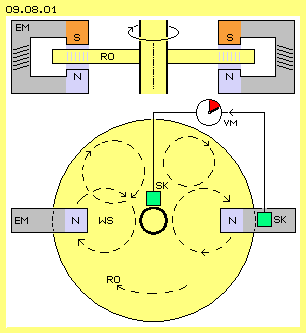
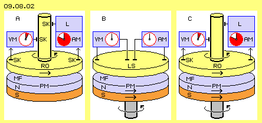
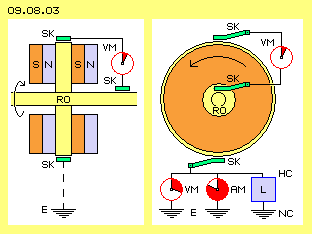
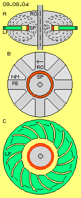
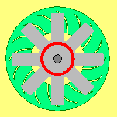
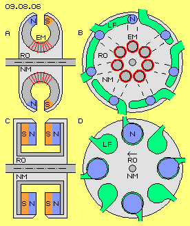
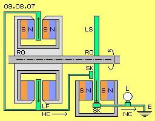

Wissenschaftliches Neuland
Die gedankliche Entwicklung des ´Golfschläger-Generators´ im vorigen Kapitel war etwas mühsam. Man durchschneidet ja nicht alle Tage eine Leiterschleife oder Spule. Entsprechend schwierig war die Beschreibung der neuartigen Funktionen. Vielleicht wird dieses Prinzip leichter verständlich aus einem zweiten Ansatz: indem die Spule durch eine Scheibe ersetzt wird. Bereits ab 1831 führte Michael Faraday diverse Experimente durch mit seltsamen Ergebnissen, welche letztlich den bekannten ´Faraday-Generator´ ergaben. Diese Maschine generiert fortwährend Gleichstrom ohne den üblichen (zwei-poligen) Kommutator und wird darum auch ´Unipolar-Generator´ genannt. Heute werden solche Geräte auch als ´N-Maschinen´ bezeichnet, weil sie möglicherweise n-fach wirksam sind. Unter diesen Begriffen werden im Internet vielfältige Diskussionen geführt.
Auch heute noch sind diverse Erscheinungen ´wundersam´. Es ist eine offene Frage, ob es sich hierbei um ein ´Perpetuum Mobile´ handelt. In der Fachwelt gilt Faraday als ein bedeutender Experimentator und Theoretiker, aber dieser Generator-Typ wird in offiziellen Fachbüchern kaum erwähnt. Insofern sind Unipolar-Maschinen noch immer ´wissenschaftliches Neuland´. Diese Problematik soll im folgenden aus Sicht des Äthers angegangen werden. In Bild 09.08.01 ist schematisch das generelle Prinzip dargestellt, oben in einem Längsschnitt und unten im Querschnitt durch die Systemachse.
Leiter-Scheibe anstatt Spule

Links und rechts sind zwei Hufeisenmagnete eingezeichnet, jeweils mit einem Südpol (S, rot) und Nordpol (N, blau). Es können Permanentmagnete oder durch Gleichstrom angeregte Elektromagnete (EM, grau) eingesetzt werden. Im Bereich der magnetischen Felder dreht ein scheibenförmiger Rotor (RO, gelb). Dieser ist fest verbunden mit einer Welle. Der Rotor und die Welle sind aus elektrisch leitendem Material. Jeweils ein Schleifkontakte (SK, grün) liegt an der Oberfläche der Welle und außen an der Scheibe an. Je schneller der Rotor dreht, desto stärker ist die Spannung zwischen den beiden Kontakten, wie durch ein Voltmeter (VM, dunkelrot) angezeigt wird.
Dieser Effekt ergibt sich aus den Induktions-Gesetzen: die Scheibe kann man sich vorstellen als eine Vielzahl radial angeordneter Leiter. Jeder ´Draht´ wird durch ein magnetisches Feld geführt. Nach der Lenzschen Regel wird damit ein Strom im Leiter generiert. In flachen Leitern fließt dieser Strom im Kreis herum und bildet sogenannte ´Wirbelströme´ (WS, durch einige gestrichelte Kreise angedeutet). Das Magnetfeld der induzierten Wirbelströme hemmt seinerseits die Bewegung des Leiters. Es ist darum ein mechanischer Antrieb erforderlich zum Betrieb dieser Maschine als Gleichstrom-Generator. Umgekehrt wird dieses Prinzip als ´Wirbelstrom-Bremse´ genutzt, z.B. im Schienenverkehr und bei LKWs bzw. Bussen. Bei der aktuellen Entwicklung von Elektro-Autos hat die ´Rück-Gewinnung´ elektrischer Energie aus mechanischer Brems-Energie große Bedeutung.
Flächendeckende Magnet-Scheibe
Je mehr Hufeisen-Magnete eingesetzt werden, desto mehr Gleichstrom kann die Maschine liefern. Im Extremfall könnten die Magnete rundum angeordnet sein. Bereits Faraday (und viele zeitgenössische Erfinder) experimentierten darum mit scheibenförmigen Permanentmagneten, wobei der ganze Rotor in einem (axial ausgerichteten) Magnetfeld dreht. Diese Konzeption ist in Bild 09.08.02 links bei A skizziert.
Unten ist ein scheibenförmiger Permanentmagnet (PM) gezeichnet mit seinem Südpol (S, rot) und Nordpol (N, hellblau). Im darüber befindlichen Magnetfeld (MF) dreht der Rotor (RO, gelb). Es sind wiederum Schleifkontakte (SK) außen am Rotor und an der Welle vorhanden. Das Voltmeter (VM, dunkelrot) zeigt nur geringe Spannung. Ein Amperemeter (AM, rot) zeigt aber eine hohe Stromstärke an, die für einen Verbraucher bzw. eine Last (L, blau) zur Verfügung steht.
Geringe Spannung, hoher Fluss

Als ´Normal-Bürger´ weiß ich nur, dass eine normale Steckdose eine Spannung von 230 V aufweist und maximal mit 3500 W zu belasten ist, weil die maximale Stromstärke durch die Sicherung auf 16 A begrenzt ist. Dagegen wird für Unipolar-Maschinen angegeben, dass ´Spielzeug-Geräte´ eine Spannung von nur wenigen mV aufweisen, aber Stromstärken von 30 A liefern sollen. Schon vor hundert Jahren wurden Maschinen gebaut mit 300 kW, 500 V und 600 A. Für Elektrolyse-Anlagen dienen Spannungen von nur 6 bis 40 V und Stromstärken über 6000 A. Für militärische Zwecke sollen Maschinen bis zu 300000 A liefern - wie üblich: grenzenloser Unsinn.
Die üblichen Strom-Generatoren sind Erzeuger von Spannung in wechselnder Stärke und Richtung. Erst in einem zweiten Schritt wird daraus ein Fließen und erst durch den Kommutator kann ein (pulsierender) Gleichstrom erzeugt werden. Im Gegensatz dazu wird in den Unipolar-Generatoren unmittelbar ein Gleichstrom generiert, von erstaunlich hoher Stromstärke bei ebenso erstaunlich geringer Spannung. Die Drehung des Rotors erfordert Kraft-Aufwand. Dieser steigt allerdings nicht proportional zur Belastung - was gängigem Verständnis zur Energie-Konstanz zu widersprechen scheint.
Problematisch ist bei diesen Maschinen die Ableitung des Stromes über Schleifkontakte, wo Wärme und Abrieb entsteht. Teilweise wird der Strom über ´flüssige Kontakte´ abgeleitet (z.B. mittels Quecksilber oder einer Metall-Schmelze), was allerdings aufwändige Technik erfordert.
Rotierende Magnete
Darum werden generell Maschinen bevorzugt, bei denen stationäre Leiter im Stator angelegt sind und die Magnete um die Systemachse rotieren.
Auch damit ist eine Relativ-Bewegung zwischen Leiter und Magnetfeld gegeben, so dass deren Interaktion nach geltenden Regeln die Induktion von Strom ergibt. Diese Variante ist im Bild 09.08.01 mittig bei B skizziert.
Der Permanent-Magnet (PM) ist auf einer Welle montiert. Das am Nordpol austretende Magnetfeld (MF) ist linksdrehend. Auch die Welle sollte linksdrehend sein, damit sich beide Bewegungen addieren. Die Leiterscheibe (LS, gelb) steht ortsfest im rotierenden Magnetfeld. Über Kontakte kann man wiederum ein Voltmeter (VM) und ein Amperemeter (AM) anschließen - die keinen Ausschlag zeigen.
Auch dieses Ergebnis scheint den Regeln der Induktion zu widersprechen. Daraus abgeleitet wurden diverse Erklärungen zur Charakteristik des Magnetismus, z.B. dass es keine Feldlinien geben könne, das magnetische Feld sich nicht drehen würde, mechanische Effekte nur durch elektrischen Fluss zustande kommen kann usw. Damit wurde diese Variante leider für untauglich befunden für die Generierung von Strom.
Nach meinen Überlegungen könnten in der stationären Leiterscheibe durchaus Wirbelströme zirkulieren. Allerdings laufen diese konzentrisch um die Achse und können mit diesen Schleifkontakten nicht abgegriffen werden. Zum andern ist der Rückfluss des Magnetfeldes vom Nord- zum Südpol nicht optimal. Es ist also durchaus denkbar, dass bei einer etwas besseren Anordnung ein generierter Strom am Stator abzugreifen ist.
Ein-teiliger Faraday-Generator
Solange man keine Kenntnis über die wahren Zusammenhänge hat, kann nur das Verfahren ´try-and-error´ weiter helfen (wobei ich allerdings auf ´think-and-error´ und eine Treffer-Rate von etwas mehr als ´fifty-fifty´ setze). Die Forscher des vorletzten Jahrhunderts hatten mit ihrem ´wilden´ Experimentieren große Erfolge, z.B. indem Faraday eine dritte Variante überprüfte, die im Bild rechts bei C skizziert ist.
Sowohl der Permanentmagnet (PM) als auch der Rotor (RO) sind auf einer gemeinsamen Welle montiert. Beide drehen in gleichem Drehsinn und gleich schnell im Raum, so dass es keine Relativ-Bewegung zwischen beiden Bauelementen gibt. Das Magnetfeld weist während der Umdrehung keine Veränderung auf. Nach geltenden Gesetzen dürfte es damit keine Induktion geben. Wenn über Schleifkontakte (SF) obiges Voltmeter (VM) und Amperemeter (AM) angeschlossen werden, zeigen diese aber eine (relativ geringe) Spannung und eine (unerwartet hohe) Stromstärke, die für eine Last (L, blau) zur Verfügung stehen.
Dieser ´einteilige Faraday-Generator´ verletzt offensichtlich die Induktionsgesetze. Bei allen üblichen Generatoren erzeugt das drehende Element einen Widerstand gegenüber dem stationären Element. Die rückwirkende Kraft des Rotors muss sich abstützen am Stator. Hier aber ist die Magnetscheibe fest verbunden mit der Leiterscheibe, so dass es keinen mechanischen Ansatz für eine rückwirkende Kraft gibt.
Dieser Generator muss angetrieben werden. Die notwendige Antriebskraft ist aber unabhängig von der abgenommenen Leistung. Dieser Faraday-Generator scheint damit auch das Gesetz der Energie-Konstanz zu verletzen. Die öffentliche Diskussion ist weitgehend damit beschäftigt, dennoch eine irgendwie geartete Gegenkraft zu begründen. Weil das nicht überzeugend gelingen konnte, ignoriert die Schul-Physik diese Problematik konsequent seit vielen Jahren. Aber gerade weil hier elementare physikalische Gesetze betroffen sind, könnte die Aufklärung dieses Sachverhaltes neue Erkenntnisse ergeben.
Ohne Spannung kein Strom
In obigem Bild 09.08.02 rechts bei C wurde der einteilige Faraday-Generator nur schematisch skizziert. Es kann mit solchen Maschinen aber zweifelsfrei elektrischer Gleichstrom am Rand abgeleitet werden, obwohl zwischen beiden Schleifkontakten praktisch keine Spannung existiert. Einige Unipolar-Maschinen erzeugen nutzbaren Strom sogar von extrem hoher Stärke, wiederum bei nur geringer Spannung. Das ist nach gängiger Lehre nicht zu erklären, weil erst durch eine Spannung U (lat. ungere = drängen, treiben, drücken) die Ladungsträger (freie Elektronen oder Ionen) in einem elektrischen Leiter in Bewegung gesetzt werden. Ohne Spannung (d.h. einem Arbeits-Potential unterschiedlich starker Ladungen) kann es keinen elektrischen Strom geben.
Was sollte die freien Elektronen veranlassen, sich (ohne entsprechende Krafteinwirkung) in riesigen Mengen in eine bestimmte Richtung in Bewegung zu setzen? Wie sollte die an einer Oberfläche befindliche Ladung überhaupt eine Kraft ausüben können auf Elektronen, die sich innerhalb eines Leiters befinden? Wie sollte ein elektrisches Feld reale Wirkung durch das Nichts eines Vakuums hindurch haben können? Diese Unipolar-Maschinen belegen deutlich, dass die gängigen Vorstellungen zur Elektro-Technik unzureichend sind. Schon Tesla und z.B. auch DePalma hatten vermutet, dass andere Faktoren im Spiel sein müssten, z.B. so etwas wie Äther (allerdings ohne konkrete Definition dieser Substanz bzw. deren Funktion).
Übliche Anordnung

In Bild 09.08.03 ist links ein Längsschnitt durch einen Unipolar-Generator üblicher Anordnung skizziert. Auf der Welle ist die elektrisch leitende Scheibe als Rotor (RO, gelb) montiert. Zwei Permanentmagnete sind beiderseits an der Scheibe angebracht, so dass sich diese im gleichsinnig drehenden Magnetfeld zwischen Nordpol (N, blau) und Südpol (S, rot) befindet. Zwischen den Schleifkontakten (SK, grün) am Rand der Scheibe und an der Welle zeigt ein Voltmeter (VM) nur geringe Spannung.
In diesem Bild rechts oben im Querschnitt ist dieses Voltmeter noch einmal dargestellt. Ich vermute nun, dass sehr wohl eine Spannung besteht, allerdings zwischen dem Schleifkontakt am Rand der Scheibe und der Erde (E). Die Atome der Permanentmagnete und der Scheibe drehen sich im Raum. Der magnetische Fluss stellt zusätzliche Äther-Bewegung dar. Um diesen Rotor existiert damit eine Aura (die viele Meter in die Umgebung reichen kann). Diese Äther-Bewegungen weisen eine schlagende Komponente auf (wie in jedem Äther-Whirlpool, siehe vorige Kapitel).
Das ist gleichbedeutend mit erhöhter Ladung (HC) und es besteht damit ein Potential gegenüber der normalen Ladung (NC) der Erdung. Der Freie Äther drückt die ´dicke Ladungsschicht´ hinunter auf das normale Niveau. Das ist der nutzbare elektrische Strom, dessen Stärke in einem Amperemeter (AM) zu messen ist und der für eine Last (L, blau) zur Verfügung steht. Die hohe Stromstärke von Unipolar-Generatoren wird u.a. zum Schweißen verwendet. Bei einfachen Schweiß-Methoden wird der Pluspol an das Werkstück geklemmt, also praktisch geerdet. Der Gleichstrom dieses Generators braucht somit keinen Leiter-Kreislauf. Es existiert nur eine Leitung zwischen dem einen Schleifkontakt am Rand der Leiterscheibe und der Erde. Dieses völlig neue Verständnis der Prozesse wird mit nachfolgenden Varianten nochmals deutlicher.
Speichen-Variante
Das Grundprinzip ist in vielen Varianten zu realisieren. Ein Beispiel ist in Bild 09.08.04 dargestellt, oben bei A zunächst in einem Längsschnitt. Der Rotor (RO, grau) besteht durchgängig aus Eisen (FE). In einer Nut ist eine Spule (SP, rot) konzentrisch zur Achse angelegt. Der darin umlaufende Gleichstrom erzeugt rund um die Spule ein torus-förmiges Magnetfeld, hier angezeigt durch die gestrichelten Kreise. In diesem Rotor sind damit die Funktionen eines Magneten und der leitenden Scheibe kombiniert. Wenn dieser massige Rotor auf hohe Drehzahl beschleunigt wird, speichert er hohe kinetische Energie (plus intensiver Äther-Bewegung in Form des internen magnetischen Flusses). Wenn die Rotation dieser Maschine (im Sinne einer Wirbelstrombremse) abrupt verzögert wird, sollen Strom-Impulse von Millionen Ampere generiert werden (z.B. zur Zündung von ´rail-guns´).

Für ´zivile´ Anwendungen ist ein Start-Stop-Betrieb ungeeignet. Es muss vielmehr ein periodischer Wechsel der Bewegungs-Intensität statt finden. In diesem Bild mittig bei B ist ein entsprechender Querschnitt durch den Rotor (RO, grau) skizziert. Um die Achse verläuft konzentrisch die Spule (SP, rot). Das magnetisierbare Eisen (FE, dunkelgrau) besteht hier aber nur mehr in Form von (hier z.B. acht) Speichen. Die Abschnitte zwischen den Speichen können leer bleiben oder durch ein nicht-magnetisches Material (NM, hellgrau) ausgefüllt sein. Das Magnetfeld ist damit nicht mehr ein in sich geschlossener Torus. In voriger Nut existieren nun Magnetfelder wechselnder Stärke.
Relativ-Bewegung
Induktion kommt zustande aufgrund ´pulsierender´ Magnetfelder und / oder relativer Bewegung zwischen Magnet und Leiter. Bei der öffentlichen Diskussion um die Entstehung des elektrischen Stromes (bzw. ob es sich hier um ein Perpetuum Mobile handelt) scheint man sich einig zu sein, dass durch die stationären Stromabnehmer die erforderliche Relativ-Bewegung (bzw. ein Ansatz für die Gegenkraft) gegeben ist. Wenn diesem Bauelement entscheidende Bedeutung zukommt, müsste es logisch konsequent ausgebildet werden.
Die üblichen Schleifkontakte sind zu anfällig für Störungen. Die Stromabnahme über flüssiges Metall ist nicht praxistauglich. Darum sind hier die Ladungsfänger (LF, grün) als stationäre Bauelemente (des Stators) ausgeführt und reichen weit in die Nut des Rotors hinein (ersetzen somit die vorigen Schleifkontakte). Wie oben im Längsschnitt A skizziert ist, findet dabei keine Berührung zwischen Ladungsfänger und Rotor statt. In diesem Bild ist unten bei C ein Querschnitt im Bereich des Ladungsfängers dargestellt.
Schubkraft des Äthers
Schon Tesla hatte vorgeschlagen, die Leiterscheibe spiralig zu unterteilen, um eine bessere Führung des ´Elektronen-Flusses´ zu erreichen. Analog dazu wurde hier der Ladungsfänger in spiralige Sektionen unterteilt. Von innen nach außen weist deren Krümmung vorwärts im Drehsinn des Systems (hier immer linksdrehend unterstellt). Am äußeren Rand sind die einzelnen Sektionen der Ladungsfänger zusammen gefasst, wo der (leicht pulsierende) Gleichstrom einem Verbraucher zugeführt wird.

In dieser Animation wird die Relativ-Bewegung verdeutlicht. Die Speichen (grau) des Rotors streichen über die spiraligen Flächen des Ladungsfängers (grün), wie ´Scheibenwischer´, allerdings in umgekehrter Funktion. Jedes Magnetfeld ´schmiert´ ihr Bewegungsmuster auf die Spiral-Bänder. Damit ´klebt´ an dieser Oberfläche eine intensive Äther-Bewegung. Diese besteht aus kreisenden Bewegungen-mit-Schlag, verzerrt zu girlanden-förmigen Schleifen. Diese erfordern eine entsprechend hohe Aura über der Oberfläche. Erst die nachfolgende Lücke (bzw. das nicht-magnetische Füllmaterial) erlaubt dem Freien Äther, diese ´Ladung´ platt zu drücken. Der normale Äther-Druck ´wischt´ die Ladung auf diesen spiraligen Bahnen nach außen (wobei das girlanden-förmige Schlagen schon in die gewünschte Richtung weist).
Am Rand wird so hohe Ladung angehäuft, dass sich gegenüber der normalen Ladung der Erde ein Potential-Gefälle ergibt. Erst dort ergibt sich also die notwendige ´Spannung´, welche der Stromstärke entspricht. Dabei fließen keine ´Ladungsträger´ durch den Leiter (nur als sekundäre Erscheinung kriechen die freien Elektronen im Leiter etwas vorwärts). Es fließt auch kein Äther durch den Raum, es bleibt aller Äther immer an seinem Ort an den Oberflächen des Ladungsfängers und entlang aller Leiter. Durch die rotierende Masse des Rotors und dessen Magnetfelder werden nur ´Äther-Turbulenzen´ auf den Oberflächen der Ladungsfänger aufgetürmt, die nachfolgend durch den Druck des Freien Äthers platt gedrückt werden.
Über dem Ladungsträger befindet sich immer das gleiche Äther-´Volumen´. Der dortige Äther wird durch die Rotorspeiche und deren Magnetfeld etwas aufgewirbelt. In der anschließenden Lücke wird diese ´Störung´ durch den Freien Äther nieder-gedrückt. Der Bewegungs-Berg wird dort hin geschoben, wo die Ladungs-Schicht dünner ist, also zur Erde hin. Weil es keine ´Ladungsträger´ gibt, müssen solche auch nicht zurück geführt werden. Aller Äther entlang der Ladungsträger und der Leiter wird nur etwas höher aufgewirbelt und wieder geglättet. Am Ladungsfänger wird periodisch eine ´Welle aufgetürmt´, die entlang der Leiter ´schwappt´ und in der Erde ausläuft.
Viele Varianten

In Bild 09.08.06 ist oben links bei A ein Längsschnitt durch einen Rotor (RO, grau) skizziert, der im wesentlichen aus nicht-magnetischem Material (NM, hellgrau) besteht. Darin eingefügt sind Elektromagnete (EM, dunkelgrau und rot), die ein dezidiertes Magnetfeld zwischen dem Nordpol (N, blau) und Südpol (S, rot) bilden. Oben rechts bei B ist ein entsprechender Querschnitt dargestellt.
Dort sind beispielsweise sieben solcher Magnete angeordnet, die während der Rotor-Drehung über sechs Ladungsfänger (LF, grün) des Stators streichen. Die turbulente Ätherbewegung wird auf die bogen-förmigen Ladungsfänger durch das Magnetfeld aufgetragen. Anschließend drückt der Freie Äther diese hoch aufragende Bewegungsschicht zusammen und letztlich aus dem Bereich des Rotors hinaus. Natürlich können beliebig viele Magnete und Ladungsfänger installiert werden, auch mehrere Module auf einer Welle neben einander. Es ist damit ein relativ gleichförmiger Gleichstrom zu generieren oder auch pulsierend in zwei oder drei Phasen.
Einfaches Modell
In diesem Bild unten rechts bei D sind z.B. acht Ladungsfänger (LF, grün) im Stator angelegt und vier Magnete auf dem Rotor (RO, hellgrau). Eingezeichnet ist hier jeweils der Nordpol (N, blau), der während der Drehung über die Flächen der Ladungsfänger streicht. Mit dieser Anordnung können also zwei Phasen oder ein gepulster Gleichstrom generiert werden.
Bei einem einfachen Funktions-Modell könnten runde Permanentmagnete eingesetzt werden. Um einen geschlossenen Magnetfluss zu erreichen, könnten jeweils zwei Magnete durch ein Joch (dunkelgrau) miteinander verbunden sein, wie in diesem Bild unten links bei C im Längsschnitt skizziert ist.
Generator plus Motor
Es ist leider noch immer eine offene Frage, ob N-Maschinen bzw. Unipolar-Maschinen ein Perpetuum Mobile darstellen oder nicht. Bekanntlich ist es nicht so einfach, die Leistungs-Aufnahme und -Abgabe eines Systems zu messen, weil jede Messung den Prozess beeinflusst. Das Problem ist eindeutig nur zu lösen, wenn eine Maschine ihren eigenen Antrieb leistet - und vielleicht darüber hinaus noch einen Energie-Überschuss liefert. In Bild 09.08.07 ist dazu ein Vorschlag für eine einfache Bauweise skizziert.
Auf einer gemeinsamen Welle (dunkelgrau) ist sowohl ein Generator als auch ein Motor installiert. Links auf dieser Welle ist der vorige Generator mit einfachen Permanentmagneten eingezeichnet. Die Ladungsfänger (LF, grün) sind in einer Leitung zusammen gefasst und der Strom aus dieser hohen Ladung (HC, siehe Pfeil) wird nach rechts zum Motor geführt.

Es bietet sich an, einen Faraday-Motor einzusetzen, weil er die Umkehrung dieses Prinzips darstellt und mit ebenso einfachen Bauteilen zu realisieren ist. Der Stator (unten rechts) wird durch zwei Permanentmagnete gebildet, die über ein Joch (dunkelgrau) miteinander verbunden sind. Der Rotor ist eine Scheibe (LS, grün) aus elektrisch leitendem Material (z.B. eine Kupferscheibe, fest verbunden mit der Welle). Über Schleifkontakte (SK) wird innen der Strom zugeführt und am Rand wieder abgenommen. Die Leiterscheibe bildet praktisch eine Vielzahl von radialen Drähten. Wenn der Strom von innen nach außen und durch das Magnetfeld hindurch fließt (siehe Pfeil), wirkt die Lorentz-Kraft auf den jeweiligen ´Draht´. Es wird damit ein Drehmoment erzeugt, das diese Leiterscheibe und damit auch den Rotor des Generators antreibt.
Overunity
Der Freie Äther drückt die hohe Ladung (HC) der Ladungsfänger durch die gesamte Anordnung an den Leiter-Oberflächen entlang in die Senke der normalen Ladung (NC) der Erde. Der Motor muss den Generator antreiben und Reibung in den Lagern und an den Schleifkontakten überwinden. Wenn zuletzt auch noch ein Lämpchen (L) leuchten würde, wäre der Beweis einer selbstlaufenden Maschine und eines Wirkungsgrades über 100 Prozent erbracht.
Professionelle Physiker bangen immer um die Erhaltung der Energie-Konstanz - wofür niemals Gefahr besteht. Allerdings ist diese nur im lückenlosen Äther gewährleistet, weil nur dort niemals eine Bewegung verloren gehen kann. Wie in der Fluid-Technologie ist unendlich viel Energie vorhanden, dort z.B. in Form der ganz normalen Molekularbewegung. Hier ist unendliche Energie in Form des fortwährenden, engräumigen ´Zitterns´ des Freien Äthers gegeben und seinem Druck gegenüber allen weiträumigeren Bewegungen. Zumindest bei Permanentmagneten stehen die Bewegungsmuster des magnetischen Feldes praktisch kostenlos zur Verfügung. Es kommt ´nur´ darauf an, zeitweilig die gegebene Bewegung so zu organisieren, dass ein gewünschter Nutzen erreicht wird.
Hier wird durch die Drehung des Rotors in Verbindung mit dem Drehen der Magnetfeldlinien eine lokale Turbulenz erzeugt, deren Aura höher als normal über die Oberfläche der Ladungsfänger hinaus reicht. Der Freie Äther will mit seinem allgemeinen Äther-Druck alles auf ein gleiches Niveau herunter drücken - und schiebt diesen Bewegungsberg - den man elektrischen Strom nennt - in die Ladungs-Senke der Erde. Insgesamt hat sich dabei an der Summe aller Bewegungen (gleich ´Energie´) überhaupt nichts geändert. In der Fluid-Technologie ergibt sich aus der geschickten Organisation von Strömungen zweifelsfrei ´overunity´, z.B. an jeder Tragfläche (die gekrümmte Fläche erzeugt relative Leere und beschleunigte Strömung, die Differenz zum normalen Luftdruck ergibt die Auftriebskraft). Analog wird hier durch das Magnetfeld eine ´Störung´ organisiert, welche durch den normalen Äther-Druck in ein Fließen von Ladung transformiert wird.
Mit obiger konsequenten Umsetzung der Effekte bei Unipolar-Maschinen könnte endlich geklärt werden, ob dieser Generator einen Mehr-Nutzen bringen kann. Herkömmliche Elektro-Generatoren produzieren Spannung und Strom in wechselnde Richtung. Alle Äther-Bewegungen müssen dabei verzögert und in der umgekehrten Richtung wieder aufgebaut werden. Es ist also fortwährend Arbeit gegen die Trägheit von Äther-Bewegungen zu leisten. Bei vorliegender Konzeption der Unipolar-Maschinen haben alle Äther-Bewegungen immer gleichen Drehsinn. Auf den Oberflächen der Ladungsträger gibt es periodisch nur höhere und niedrigere Wirbel, praktisch ein Aufwärts-Schwappen und Zurück-Fallen vertikal zur Oberfläche. Dabei erfüllt der Freie Äther (kostenlos) die Funktion einer Pumpe, indem der die hohen Wirbel auf Normalmaß reduziert und am Leiter entlang drückt. Dieses Arbeitsprinzip dürfte sehr ökonomisch sein.